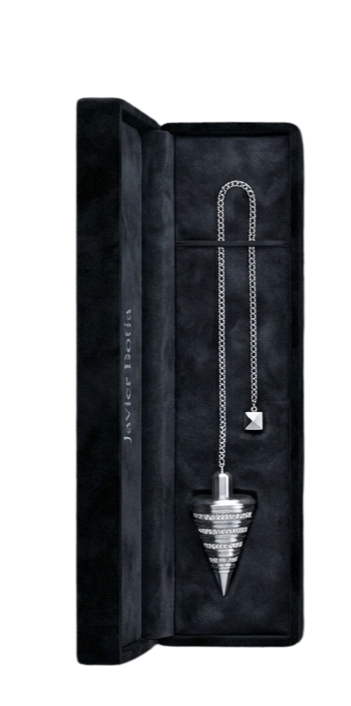
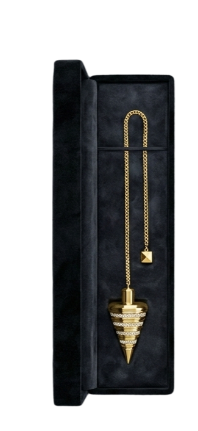
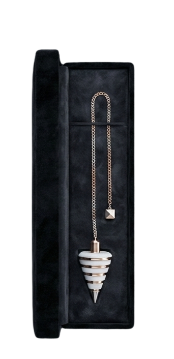

La Conexión Inconsciente
La ciencia y el misterio convergen en un solo punto: el centro de tu ser. Un puente tangible entre lo que crees saber y las verdades que tu subconsciente guarda con celo. Este no es solo un objeto de observación, es una extensión de tu sistema nervioso, capaz de amplificar los susurros de tu intuición y transformarlos en un lenguaje físico, claro y rotundo que guía tu camino hacia la claridad.
El Gigante Silencioso
Tu subconsciente es una supercomputadora biológica que procesa aproximadamente 11 millones de bits de información por segundo, frente a los 50 bits de tu mente consciente. Es el guardián de tus verdades más puras, libre de los prejuicios, las dudas y el ruido externo que nublan tu juicio lógico cotidiano. Al usar el péndulo, estableces una línea directa con este inmenso océano de conocimiento guardado en tu interior.
Respuesta Ideomotora
Este fenómeno científico describe cómo tu pensamiento genera micro-contracciones musculares que tus sentidos habituales no pueden detectar. Tu cerebro envía señales eléctricas a través del sistema nervioso central hacia tus dedos, actuando como un puente galvánico. El péndulo no se mueve por fuerzas externas, sino por la precisión absoluta de tu propia neurobiología amplificada para ser visible ante tus ojos.
El Diálogo Sagrado
El péndulo actúa como un traductor universal de frecuencias energéticas e impulsos neuronales. Convierte esas micro-reacciones, que a menudo sentimos como "intuición" o "corazonadas", en un lenguaje visual claro y tangible. Es la herramienta que permite que tu sabiduría interna deje de ser un susurro abstracto para convertirse en un mensaje físico, guiándote con una rotunda claridad hacia las respuestas que buscas.
"El péndulo no te da las respuestas, revela las que ya habitan dentro de ti."

Sencillez en cada giro
Tres pasos para sincronizar tu energía con el péndulo de Javier Botía.
El Agarre
Sujeta el péndulo por el nudo superior del hilo entre tus dedos índice y pulgar. Déjalo caer libremente, sin tensión alguna, permitiendo que la inercia y la gravedad preparen el canal de comunicación.
La Calibración
Establece tu código personal preguntando: "¿Cuál es mi SÍ?" y "¿Cuál es mi NO?". No fuerces el movimiento; observa con calma cómo tu sistema nervioso empieza a manifestar su respuesta única.
La Verdad
Una vez calibrado, lanza tus preguntas de forma clara y directa. Siente cómo la vibración de tu subconsciente fluye hasta el péndulo, traduciendo tus certezas más profundas en movimiento.
La Regla de Oro
El péndulo es un objeto estrictamente personal. Se carga con tu energía y no debe ser tocado por nadie más. Si otra persona lo toca, se descargará y perderá su vínculo contigo.
Elige tu conexión
Cada edición ha sido diseñada con materiales de alta calidad para garantizar una respuesta precisa.


Edición Plata
La pureza del metal al servicio de tu intuición. Una herramienta equilibrada para precisión absoluta.


Edición Oro
La máxima distinción. Un artefacto cargado de magnetismo para las sesiones más exigentes.


Edición Blanco
Claridad y transparencia. Diseñado para quienes buscan una conexión limpia y sin interferencias.